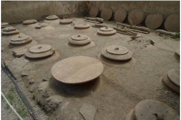

Food and Dining
The overwhelming presence of pistrina (bakeries) in Pompeii suggests to us that bread was the food of the people, with Bradley describing bread as ‘the basic foodstuffs for the inhabitants’. However the Pompeiians didn’t live solely off bread alone, multiple sources refer to wine, oil and graum production as integral industries within the economy, while others reference the consumption of fish, fruit and exotic spices. Another interesting point surrounding Pompeii's food culture is the discovery of thermopolia (fast food bars) and triclina.
Bradley states that ‘30 or so bakeries (pistrina) have been identified in Pompeii’ concluding that this ‘saved households from buying grain, milling it into flour themselves and baking their own bread’. The large presents of pistrina supports this claim heavily, as these pistrina would require a large customer base to remain economically viable. Source 1 revales the scale of a pistrina while source 2 shows a frescoed pistrina.

These sources also provide evidence for Bradley claim though the presents of three mills within the pristina, suggesting that a large amount of grain was milled each day, while source 2 depicts a group of people purchasing purchasing bread. While this may seem insignificant, it confirms the use of pristina as small businesses producing bread.
Bradley describes wine and oil production as ‘principal sources of income for people in the Vesuvian area’, with many sources in Pompeii acting as a testament to its popularity. For example, source 3 shows embedded dolia (large pots) in the courtyard of a villa at Boscoreale. Contrary to today, wine was stored in the villas (villa rustica) it was produced, only transported to thermopolia (bars) when required.
Like wine, olive oil was also heavily produced with Bradley stating that ‘the Villa of Pisanella kept enough storage jars for 5910 litres’. However oil wasn’t used exclusively for cooking, to Pliny the Elders dismay he states ‘the Greeks, those parents of all vices, have abused it by making it minister to luxury, and employing it commonly in the gymnasium’.
Source 3: Dolia in a villa at Boscoreale
Graum was an extremely popular sauce within the Roman Empire and Pompeii, as Pliny states ‘no other liquid except unguents has come to be more highly valued’. Source 4, an extract from De medicina et de virtute herbarum, revals a traditional recipe of time.
Source 4: De medicina et de virtute herbarum extract, showing traditional graum recipe. Use fatty fish, for example, sardines, and a well-sealed (pitched) container with a 26-35 quart capacity. Add dried, aromatic herbs possessing a strong flavor, such as dill, coriander, fennel, celery, mint, oregano, and others, making a layer on the bottom of the container; then put down a layer of fish (if small, leave them whole, if large, use pieces) and over this, add a layer of salt two fingers high. Repeat these layers until the container is filled. Let it rest for seven days in the sun. Then mix the sauce daily for 20 days. After that, it becomes a liquid.
While Graum would certainly be considered disgusting by today's standards, judging by the wealth of Aulus Umbricius Scaurus it was certainly quite popular and profitable. Bradley describes Scaurus as ‘the biggest graum dealer in Pompeii...believed to have owned at least six workshops producing graum, as well as importing garum from Spain’. This is also evident by the vast mansion he built overlooking the sea.
Art from Pompeii takes a realistic perspective, often portraying daily occurrences or everyday objects. When viewed through this lens, we are able to interpret sources 5 and 6 as reflections of everyday produce. While these frescoes may not reveal portion sizes or meals consumed by the average Pompeiian, they show us components of the Pompeiian diet. Source 5 features onions, pears, pomegranates, figs and a chicken, suggesting that these would be commonplace in a Pompeiian diet. Similarly, we are able to apply the same lens to source 6, revealing the marine life Pompeians consumed.
Source 5: Fresco of chicken Source 6: Fresco showing marine produce

Although interestingly preserved fecal matter has been found within the site, this reveals information on the people's diet. The information preserved within fecal matter confirms the diet of Pompeiians has heavy in fruit and vegetables, as well as grains, as these remains have been found preserved.
This palette varies quite significantly from the rich to poor however, while the poor were not starving and ate bread, fruit, vegetables and meat this is a far cry from some of the delicacies indulged by the rich. Sea urchins and shellfish were present in their diet, however, so to were the most exotic animal species with a giraffes bone found within the site. Described by Ellis as ‘thought to be the only giraffe bone ever recorded from an archaeological excavation in Roman Italy’, the discovery speaks to the flamboyant nature of the elite and their dining habits.
Thermopolia were fast food/snack bars scattered across Pompeii. So far 150 have been discovered in Pompeii, reflective of their popularity within the city. Thermopolia were especially popular with the poorer residents of Pompeii. who the Guardian described as ‘rarely [having] cooking facilities in their home’. Often thermopolia, as shown in source 6, featured dolia built into the counter, used to keep food and drink warm. The Guardian outlines typical menu items as ‘coarse bread with salty fish, baked cheese, lentils and spicy wine’. Yet despite their overwhelming presents, thermopolia were considered shady areas with sources such as Plautus speaking of effeminate Greeks and thieving slaves frequenting them.
Source 7: Thermopolium within Pompeii
The triclinium was a dining space found in some of the more grand houses of Pompeii. The word triclinium is the Greek name for a space with three couches of which the triclinium, shown in source 7, is defined by. Contrary to how we dine today, Mau and sources found outside the site suggest that Pompeians would lie down on the couches as Bradley describes ‘adoption of the Greek practice of reclining while dining’. However they did not lie bare on the stone. With Bradley stating ‘the stone branch was covered with mattresses and colourful cushions’. Like the triclinium shown in source 7, most tricinia were quite small, described by Mau as ‘made to accommodate three persons’.
Source 8: Triclinium in the House of the Cryptoporticus